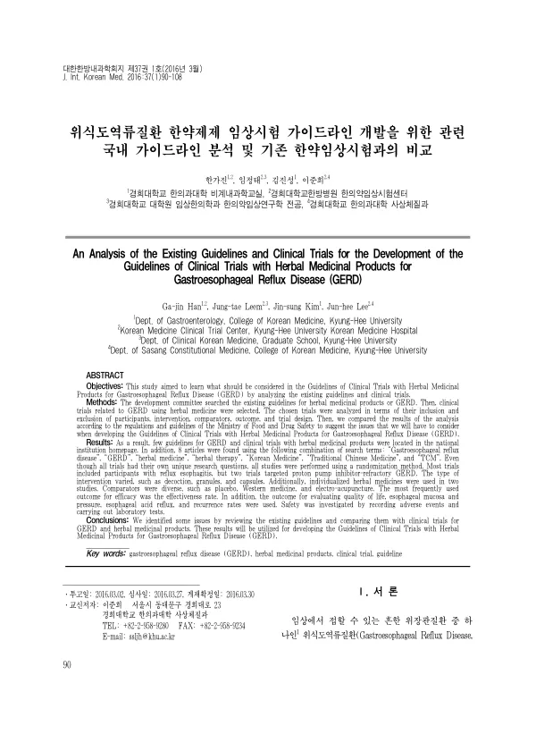

An Analysis of the Existing Guidelines and Clinical Trials for the Development of the Guidelines of Clinical Trials with Herbal Medicinal Products for Gastroesophageal Reflux Disease (GERD)
Han Gj, Leem Jt, Kim Js, Lee Jh
The Journal of Internal Korean Medicine 37(1):90-108

첫 장 · 오픈액세스First page · open access
논문 소개Summary
위식도역류질환 한약제제 임상시험 가이드라인을 만들기 위해, 기존 가이드라인과 이미 수행된 한약 임상시험을 견주어 본 연구입니다. 개발위원회가 관련 가이드라인을 찾고 한약을 쓴 임상시험 8편을 골라 대상자, 중재, 대조군, 결과지표, 연구설계로 나누어 분석했습니다. 대부분 역류성 식도염 환자를 대상으로 했고 두 편은 양성자펌프억제제에 반응하지 않는 환자를 다뤘습니다. 중재는 탕약과 과립, 캡슐로 다양했고 두 편은 개별 맞춤 한약을 썼으며 대조군은 위약과 양약, 전침으로 갈렸습니다. 가장 자주 쓰인 유효성 지표는 유효율이었습니다. 저자들은 이 대조를 통해 가이드라인 개발에서 고려해야 할 쟁점들을 확인했습니다.
A study comparing existing guidelines with clinical trials already conducted, in order to develop a guideline for clinical trials of herbal medicinal products in gastro-oesophageal reflux disease. The development committee searched national institutional websites for relevant guidelines and selected eight clinical trials of herbal medicine for the condition, analysing them across five dimensions: inclusion and exclusion of participants, intervention, comparator, outcome and trial design. Most enrolled patients with reflux oesophagitis, and two targeted proton pump inhibitor-refractory disease. Interventions ranged across decoctions, granules and capsules, two used individualised herbal prescriptions, and comparators varied between placebo, Western medicine and electroacupuncture. The most frequently used efficacy outcome was the effectiveness rate. Through this comparison the authors identified the issues that guideline development would have to address.
인용Cite
Han Gj, Leem Jt, Kim Js, Lee Jh. An Analysis of the Existing Guidelines and Clinical Trials for the Development of the Guidelines of Clinical Trials with Herbal Medicinal Products for Gastroesophageal Reflux Disease (GERD). The Journal of Internal Korean Medicine. 2016;37(1):90-108.